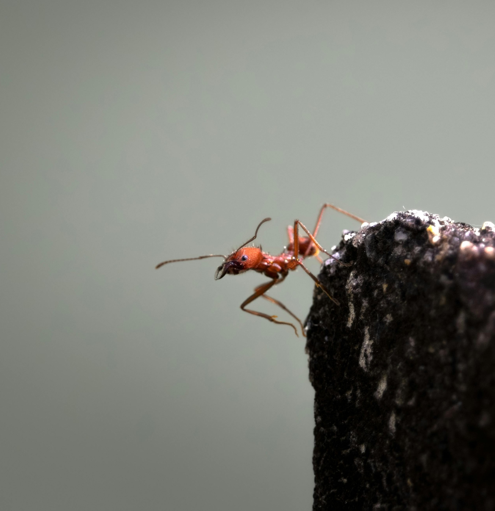

Scents of identity

Ants rely on their olfaction to recognise their nestmates and maintain the colony cohesion. Using behavioural, transcriptomic, and chemical analyses to assess the formation of their most crucial social memory: olfactory identity. We show that the flexibility of this memory requires both peripheral (antenna) and central (brain) modulation of the nervous system. Habituation shifts olfactory receptor distribution, while associative learning shapes the neural template in higher brain regions.
Bey, M., Alex, N., Maczkowicz, L., Nehring, V. (2025): Exposure to non-nestmate odours changes the odorant receptor profile in Acromyrmex echinatior ants. bioRxiv 2025.08.17.668880. https://www.biorxiv.org/content/10.1101/2025.08.17.668880v1Insects depend on a broad olfactory perception ability that involves many sensory receptors. Social insects, in particular, use olfactory cues to maintain colony cohesion. They recognize nestmates through colony-specific olfactory labels that individuals store as neural templates in their memory. Learning continuously optimises the nestmate recognition template to keep up with the constant changes in colony labels. The template is often considered to be located in higher brain centres and potentially a product of learning. However, some authors suggest it might be in the neural periphery, i.e. the antennae or antennal lobes, formed by habituation or receptor adaptation. Here we investigate a potential mechanism for the construction and functioning of the colony template in the peripheral nervous system: the antenna’s odorant receptor (OR) profile and its dynamics. We exposed Acromyrmex echinatior leaf-cutting ants to non-nestmate odours and analysed the consequences on their behaviour and antennal gene expression. Consistent with other studies, prolonged exposure to non-nestmate odours reduced worker aggression towards the non-nestmate label, indicating habituation to the non-nestmate odour. Exposure also altered the expression of the OR genes. Notably, the OR profiles were colony-specific, mirroring the colony-specific recognition labels. When we exposed two different colonies to the same non-nestmate odour, the colony-specificity of the odorant receptor gene expression vanished. This indicates that the olfactory machinery used to perceive nestmate recognition cues is flexible and adapts to the current nest-specific olfactory environment. The OR profiles could either become more sensitive to the nestmate recognition cues by increasing the number or ORs for the nest-specific substances, or less sensitive by decreasing the expression of these ORs. The latter would in turn increase the sensitivity to non-nestmate cues. This would be a mechanism explaining habituation to nestmate recognition cues that has been described across the social insect literature.